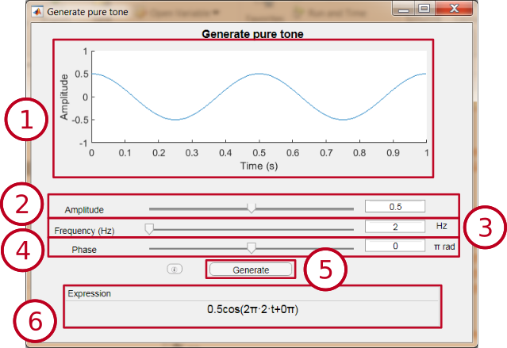
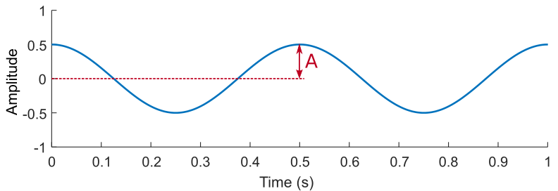
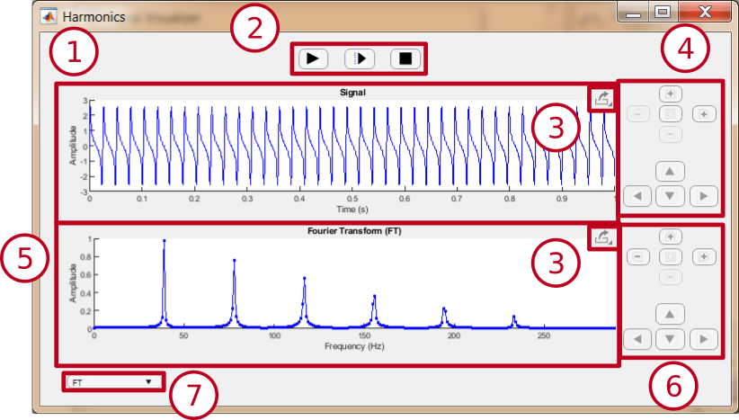
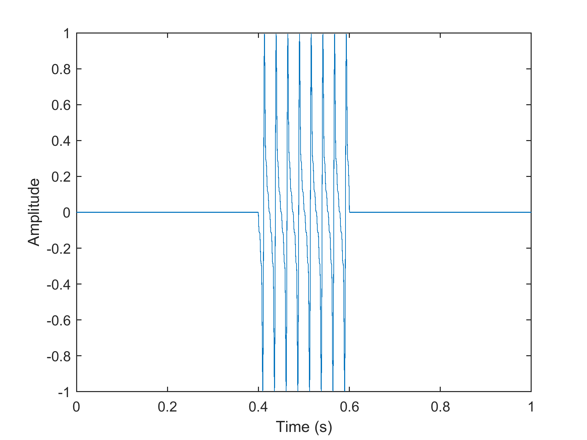

User help
Generate pure tone
Harmonic synthesis
Generate square wave
Generate sawtooth signal
Generate Rosenberg pulse
Generate noise
Load audio file
Record audio
Visualization window
Generate pure tone
This module allows the generation of a pure tone of one second duration, with the possibility of modifying the parameters of amplitude, frequency and phase.
Interface

- Preview window: Allows to see the signal that will be generated by the module. It is updated when the value of a parameter changes.
- Amplitude selector: Allows to vary the amplitude of the cosine between 0 and 1. The value can be changed by sliding the cursor or by changing the value in the text box.
- Frequency selector: Allows to vary the cosine frequency between 1 and 20000 Hz. The value can be changed by sliding the cursor or by changing the value in the text box.
- Phase selector: Allows to vary the phase of the cosine between -π and π radians. The value can be changed by sliding the or by changing the value in the text box.
- "Generate" button: Opens a new display window to observe a signal with the selected parameters, with a length of 1 second.
- Expression: Shows the mathematical expression of the signal with the selected parameters. It is updated when the value of a parameter changes.
Pure tone
A pure tone is a sinusoidal signal that has a single frequency. In this module it is generated using the cosine function, and it is expressed by the following formula:
A cos(2πft + 𝜙),
where A is the amplitude, f is the frequency and 𝜙 is the phase.
- Amplitude: Maximum value of the signal.
 |
In this example the amplitude is 0.5 |
- Frequency: Number of times an entire signal cycle is repeated along a time unit. Measured in Hertz (Hz) is the number of times a signal cycle is repeated in 1 second.

|
In this example the frequency is 2 Hz |
- Phase: Displacement of the cosine. It is measured in radians, being 2π radian a complete cycle of the signal.

|
In this example the signal is shifted ¼ of cycle, so the phase is π/2 rad |
Harmonic synthesis
This module allows the generation of up to six superimposed pure tones, each with a different frequency and amplitude. The keyboard at the bottom allows you to select a note to observe its first six harmonics.
Interface
- Preview window: Allows to see the signal that will be generated by the module. It is updated when the value of a parameter changes.
- Frequency selector: Allows to select the frequency of each of the six components. It can be selected by typing in the text box or clicking on the arrows.
- Amplitude selector: Allows to select the amplitude of each of the six components. It can be selected by moving the cursor.
- "Generate" button: Opens a new display window to observe a signal with the selected parameters, with a length of 1 second.
- Octave: Allows to select the octave of the notes on the keyboard.
- Keyboard: Allows to select a note. When a note is selected, each of the six components will be assigned the frequencies of its first six harmonics, with a predetermined amplitude.
Harmonics
Harmonics are additional pure tones that arise naturally when a note is played. The frequency of each is determined by the product of the fundamental frequency (frequency of the note emitted) and a natural number (1, 2, 3, 4...).
Depending on the amplitude of each of its harmonics, the timbre of the sound changes.
Thus, the harmonics of a Do3 (130,813 Hz) are as follows:
Harmonic order | Frequency (Hz) | Note |
1 (Fundamental frequency) | 130.813 | C3 |
2 | 130.813 · 2 = 261,626 | C4 |
3 | 130.813 · 3 = 392,439 | G4 |
4 | 130.813 · 4 = 523,252 | C5 |
5 | 130.813 · 5 = 654.065 | E5 |
6 | 130.813 · 6 = 784,878 | G5 |
7 | 130.813 · 7 = 915,691 | Bb5 (lowly tuned) |
... | ... | ... |
Generate square wave
This module allows the generation of a square wave signal of one second duration, with the possibility of modifying the parameters of amplitude, frequency, phase and active cycle.
Interface
- Preview window: Allows to see the signal that will be generated by the module. It is updated when the value of some parameter changes.
- Amplitude selector: Allows to vary the amplitude of the square wave between 0 and 1. The value can be changed sliding the cursor or modifying the value in the text box.
- Frequency selector: Allows to vary the frequency of the square wave between 1 and 20000 Hz. The value can be changed by sliding the cursor or modifying the value in the text box.
- Phase selector: Allows to vary the phase of the square wave between -π and π radians. The value can be changed by sliding the cursor or modifying the value in the text box.
- Active cycle selector: Allows to vary the active cycle of the square wave between 10 and 90%.
- "Generate" button: Opens a new display window to observe a signal with the selected parameters, lasting 1 second.
Square wave
A square wave is a periodic wave formed by instantaneous transitions between two levels.
The configurable parameters are as follows:
- Amplitude: Difference between the two levels.
|
In this example the amplitude is 1. |
- Frequency: Number of periods in 1 second, measured in Hz (For more information, click here).
- Phase: Displacement of the signal with respect to its original position. (For more information, click here).
- Active cycle: Part of the period in which the signal is at the highest level (or active level). In this case, it is measured as a percentage of the total duration of the period.
Generate sawtooth signal
This module allows the generation of a sawtooth signal of one second duration, with the possibility of modifying the parameters of amplitude, frequency, phase and position of the maximum.
Interface
- Preview window: Allows to see the signal that will be generated by the module. It is updated when the value of some parameter changes.
- Amplitude selector: Allows to vary the amplitude of the sawtooth signal between 0 and 1. The value can be changed sliding the cursor or modifying the value in the text box.
- Frequency selector: Allows to vary the frequency of the sawtooth signal between 1 and 20000 Hz. The value can be changed by sliding the cursor or modifying the value in the text box.
- Phase selector: Allows to vary the phase of the sawtooth signal between -π and π radians. The value can be changed by sliding the cursor or modifying the value in the text box.
- Active cycle selector: Maximum selector: Allows to vary the position of the maximum between 0 and 1.
- "Generate" button: Opens a new display window to observe a signal with the selected parameters, lasting 1 second.
Sawtooth signal
The sawtooth signal is a periodic signal, in which each period consists of a straight line joining an upper and a lower point. As its name suggests, it is similar to the teeth of a saw.
The configurable parameters are as follows:
- Amplitude: Maximum signal value.
|
In this example the amplitude is 1. |
- Frequency: Number of periods in 1 second, measured in Hz (For more information, click here).
- Phase: Displacement of the signal with respect to its original position. (For more information, click here).
- Maximum position: Maximum position within the period (as a reference, taking the minimum as the beginning of the period). 0 represents the beginning of the period, and 1 the end.

|
Maximum position: 1 |

|
Maximum position: 0.5 |

|
Maximum position: 0 |
Generate Rosenberg pulse
This module allows the generation of a Rosenberg pulse of one second duration, with the possibility of modifying the parameters of amplitude, frequency, rising time and decreasing time.
Interface

- Preview window: Allows to see the signal that will be generated by the module. It is updated when the value of some parameter changes.
- Amplitude selector: Allows to vary the amplitude of the Rosenberg pulse between 0 and 1. The value can be changed sliding the cursor or modifying the value in the text box.
- Frequency selector: Allows to vary the frequency of the Rosenberg pulse between 1 and 20000 Hz. The value can be changed by sliding the cursor or modifying the value in the text box.
- Rising time selector: Allows to vary the rising time, in relation to the total cycle time, between 10% and 90%. The value can be changed by sliding the cursor or by modifying the value in the text box.
- Decreasing time selector: Allows to vary the decreasing time, in relation to the total cycle time, between 10% and 90%. The value can be changed by sliding the cursor or modifying the value in the text box.
- "Generate" button: Opens a new display window to observe a signal with the selected parameters, lasting 1 second.
Rosenberg pulse
It's a pulse used in synthetic voice generation. With this model, the aim is to imitate the sound produced by the glottis when performing the opening and closing movements.
The configurable parameters are as follows:
- Amplitude: Maximum signal value.
- Frequency: Number of periods in 1 second, measured in Hz (For more information, click here).
- Rising time: Time it takes for the signal to rise from the minimum to the maximum. It represents the glottal opening time.
- Decreasing time: Time it takes for the signal to descend from the maximum to the minimum. It represents the glottal closing time.
Generate noise
This module allows the generation of different types of noise of one second duration, with the possibility of modifying the maximum amplitude.
Interface
- Preview window: Allows to see the signal that will be generated by the module. It is updated when the value of some parameter changes.
- Noise type selector: Allows you to select the type of noise generated.
- Maximum amplitude selector: Allows to select the maximum amplitude of the generated noise.
- “New sample" button: Generates a new random noise sample.
- "Generate" button: Opens a new display window to observe a signal with the selected parameters, lasting 1 second.
Noise
Noise is defined as a signal formed by samples whose value is random.
- Maximum amplitude: Numerical range within which the sample values will be found.
For example, if a maximum amplitude of 0.5 is selected, the value of each sample will be a random number between -0.5 and 0.5.
- Noise type: There are different types of noise, depending on their spectral power density.
- White noise: This type of noise has a flat and uniform spectral power density across the entire frequency range. This means that it has the same spectral power at all frequencies, and that the samples are uncorrelated to each other. That is, the value of each sample is independent of the value of all other samples.
- Pink noise: The spectral power density of this noise is inversely proportional to the frequency. This means that this noise has higher spectral power in the low frequencies, and lower in the high ones.
- Brown noise: Its spectral power density is inversely proportional to the frequency, as it is the case with pink noise. The difference with the previous type of noise is that the spectral power in the high frequencies is 0.
Load audio file
This module allows to load an audio file for analysis.
Interface
- Preview window: Allows to see the signal that will be generated by the module.
- “Open file" button: Allows to select an audio file to load.
- Playback buttons: They allow you to start or stop the audio file playback. If a fragment is selected, only this part will be played.
- Fragment selection panel: Allows to select a fragment of the loaded audio. To select the start and end, you will have to write in the enabled boxes the time in which each tip will be placed, or by clicking on the display window.
- Information panel: Displays information about the duration of the file and its sample rate.
- “Load" button: Opens a new visualization window in which the audio file, or the selected fragment, is loaded.
Record audio
This module allows to record up to 60 seconds of audio for analysis.
Interface
- Preview window: Allows to see the signal that will be generated by the module.
- Playback buttons: Allows you to start recording, start playback, or stop recording or playback of the audio file. If a fragment is selected, only this part will be played.
- Fragment selection panel: Allows to select a fragment of the loaded audio. To select the start and end, you will have to write in the enabled boxes the time in which each tip will be placed, or by clicking on the display window.
- “Load" button: Opens a new visualization window in which the audio file, or the selected fragment, is loaded.
Visualization window
This window allows to analyze the spectrum of the chosen signal by different methods: Fourier Transform, Short Time Fourier Transform and spectrogram.
Interface
Fourier Transform

It allows to observe the Fourier Transform of the audio signal.
- Signal View: Displays the loaded audio signal in the display window.
- Playback buttons: They allow to control the playback of the audio signal.
- The right button starts playback from the beginning of the signal.
- The center button starts playback from the cursor placed by clicking on the signal.
- The left button stops playback.
- Export image: By clicking on this button a drop-down list appears with three options.
- The upper button allows to save the image.
- The central button copies the image as a bitmap.
- The lower button copies the image as a vector image.
- Signal navigation panel

- They are used to zoom in and out on the vertical axis.
- They are used to zoom in and out on the horizontal axis.
- Restores the original view.
- Scrolls through the view
- Spectral information view: Here you can see the spectral information of the signal, obtained by the selected method.
- Spectral Information Navigation Panel: Use this panel to navigate through the spectral information view. It works in the same way as the signal navigation panel.
- Mode selection: Allows to select the method by which the spectral information of the signal is obtained.
STFT
It allows to observe the Short Time Fourier Transform (STFT) of the audio signal.

- Window: Window used to calculate the STFT. You can change its position by clicking on the signal.
- Window shape selector
- Window size selector: Allows you to enter the size of the window in seconds (between 0.001 and 1).
- nfft selector: Allows to select the number of points of the transform among the available options.
Espectrograma

It allows to see the spectrogram of the signal.
STFT + Espectrograma

It allows to observe the STFT of the signal and to see its position in the spectrogram.
Fourier Transform
The Fourier Transform is a mathematical transformation used to transform signals in the time domain (in this case, the audio signal) to the frequency domain. The result shows the frequency content of the signal. In short, it is an approach to breaking down a signal into a sum of several pure tones of different frequencies.

Where f(t) is a signal in the time domain and where ω = 2𝜋f. F(ω) is the obtained Fourier Transform.
In this case, the audio signal is not a continuous signal, but a discrete signal, in other words, formed by a set of samples. So it’s actually performing a Discrete Fourier Transform, which is mathematically defined as follows:

Where x[n] is the audio signal, with N samples, y ω = 2𝜋f. X(ω) is the obtained Discrete Fourier Transform.
Short Time Fourier Transform (STFT)
It consists of performing the Discrete Fourier Transform on a segment of the signal, rather than on the entire signal. This segment of the signal is obtained by multiplying the original signal by a window. In this way, only the samples of the signal inside the window will be taken into account. The values of these samples will be modified by the shape of the window (except in the case of the rectangular window).
|  |
Rectangular window applied to a signal |

|
|
Hanning window applied to a signal |
Spectrogram
Representation that allows to see the frequency development of the audio signal over time. The horizontal axis corresponds to the time axis, the vertical axis to the frequency, and the variation of the power spectral density is represented by a colour gradient.
The spectrogram is calculated by performing several consecutive STFTs, scanning with the chosen window.